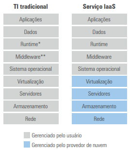
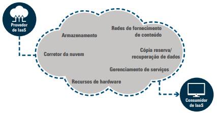

---
---
{% include head-aula.html page-title="Aula 14 - InfraTI" %}
{% include heading-aula.html heading="Computação em Nuvem – IaaS (Infraestrutura como Serviço)" %}
1. Definição de IaaS
O modelo de Infraestrutura como Serviço (IaaS) fornece componentes fundamentais de TI virtualizados através da
nuvem, conforme Chess e Franklin Jr. (2013):
"Oferece aos usuários espaço virtual em servidores, conexões de rede, largura de banda, endereços IP e
balanceadores de carga, distribuídos geograficamente para segurança e disponibilidade."

1.1 Benefícios Chave
- Terceirização completa: O provedor gerencia aquisição, configuração, atualização e
manutenção do hardware
- Flexibilidade: Provisionamento via catálogo de hardware virtual (CPU, memória,
armazenamento)
- Exemplos de provedores: Amazon EC2, Microsoft Azure, Google Compute Engine, IBM Cloud
2. Serviços Oferecidos pelos Provedores IaaS

2.1 Descrição Detalhada dos Serviços
- Armazenamento (Storage):
- Capacidade escalável em disco para aplicativos
- Suporte a backups e arquivamento de dados
- Opções de desempenho variáveis (HDD, SSD)
- Corretor de Nuvem (Cloud Broker):
- Gerencia serviços em múltiplas plataformas de nuvem
- Suporte a configurações híbridas (pública-privada)
- Facilita migração entre provedores
- Recursos de Hardware (Compute):
- Servidores virtuais com CPU, RAM e rede configuráveis
- Tipos: Máquinas virtuais, contêineres, bare-metal
- Escalonamento automático conforme demanda
- Gerenciamento de Serviços:
- Console único para administração
- APIs para integração com outras ferramentas
- Monitoramento de desempenho e uso
- Backup/Recuperação:
- Snapshots automáticos em intervalos regulares
- Recuperação pontual (point-in-time recovery)
- Replicação geográfica para disaster recovery
- Redes de Entrega de Conteúdo (CDN):
- Otimização de desempenho para aplicações web
- Cache distribuído globalmente
- Redução de latência para usuários finais
3. Componentes Técnicos da IaaS
Conforme Vacca (2016), a infraestrutura como serviço é composta por cinco componentes principais:
3.1 Compute (Processamento)
- Implementação: Hypervisors (VMware ESXi, Hyper-V), contêineres (Docker), servidores
bare-metal
- Funcionamento: Cada instância possui CPU virtualizada, memória dedicada e recursos isolados
- Segurança:
- Isolamento rigoroso entre máquinas virtuais
- Proteção contra "vazamento" entre VMs
- Controle de consumo excessivo de recursos
3.2 Network (Rede)
- Elementos: VLANs virtuais, balanceadores de carga, firewalls
- Tecnologias: Redes Definidas por Software (SDN), comutação virtual
- Segurança:
- Isolamento de tráfego entre tenants
- Proteção contra acesso não autorizado
- Segmentação de rede rigorosa
3.3 Storage (Armazenamento)
- Tipos: Bloco, arquivo e objeto
- Recursos: Snapshots, versionamento, replicação
- Segurança:
- Criptografia em repouso e em trânsito
- Controle de acesso granular
- Isolamento completo entre clientes
4. Vantagens para Empresas
- Redução de Custos:
- Elimina investimento inicial em hardware
- Modelo pay-as-you-go (pague pelo uso)
- Não há custos com depreciação de equipamentos
- Agilidade Operacional:
- Provisionamento em minutos (vs. semanas/meses)
- Escalonamento automático conforme demanda
- Experiência de autoatendimento via portal
- Resiliência:
- Alta disponibilidade incorporada
- Recuperação de desastres simplificada
- Redundância geográfica
Veja o seguinte vídeo para melhor entendimento: link
5. Considerações Finais
A adoção de IaaS representa uma transformação na gestão de TI:
- Para pequenas/médias empresas: Acesso a infraestrutura de classe empresarial sem
investimento inicial
- Para grandes empresas: Complemento à infraestrutura física existente
- Desafios: Segurança de dados, conformidade regulatória, lock-in com provedores
{% include nav-aula.html materia="infraestruturadeti" aula="15" %}
{% include footer.html %}